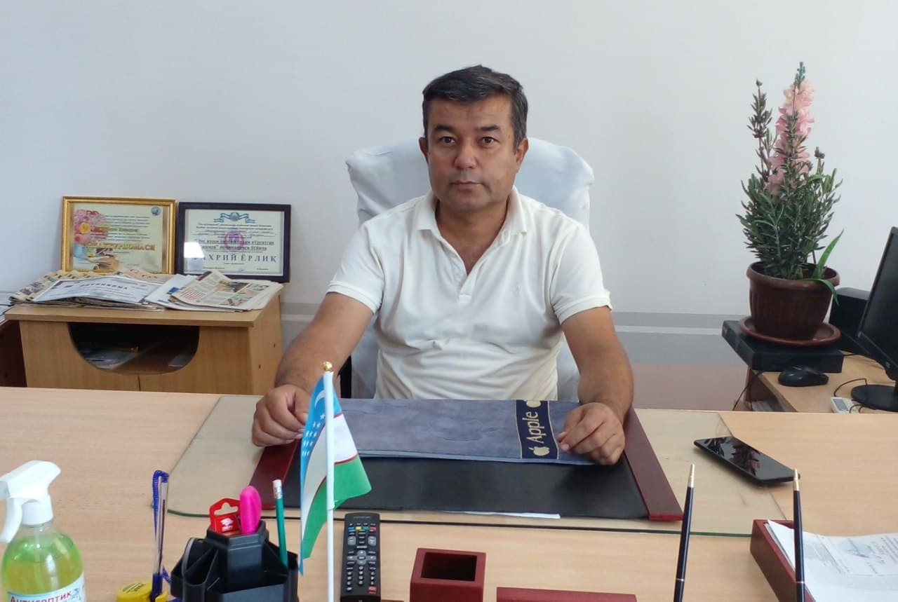
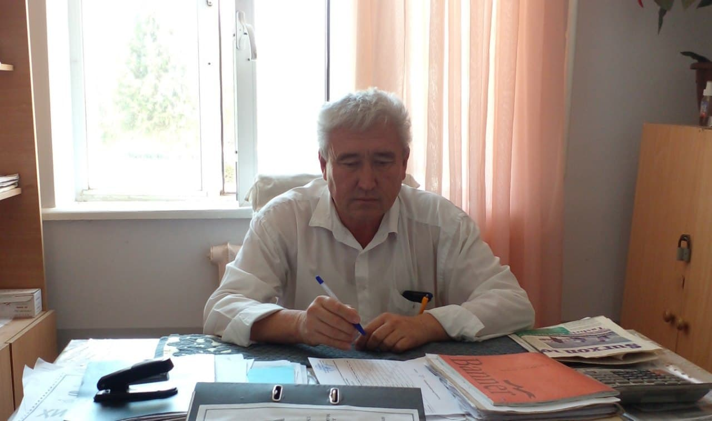
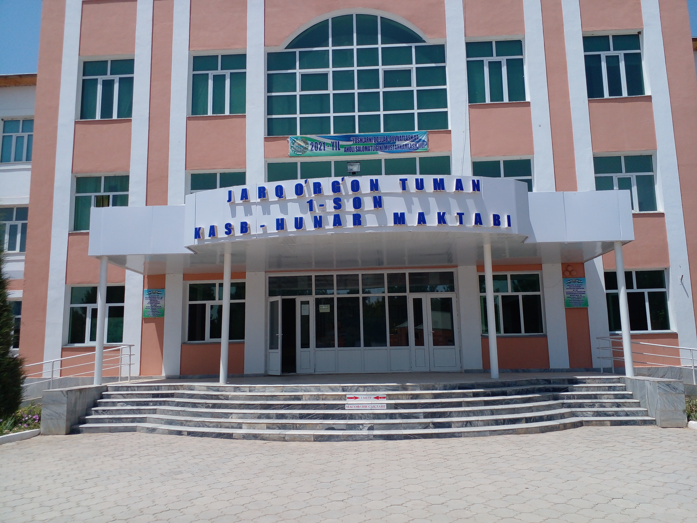

Жаббаров Дилмурод Чариевич 1973 йилда Жарқўрғон туманида тугилган маълумоти олий. 1996 йилда Фарғона политехника институти машинасозлик технологияси факултетини тамомлаган. Жарқўрғон Какайди транспорт ва алоқа касб-ҳунар коллежида ИЧИБДЎ лавозимида кўп йиллар давомида ишлаб келган. Хозирги кунда Жарқўрғон Какайди транспорт ва алоқа касб-ҳунар мактаби директори вазифасида фаолият юритиб келмоқда.

Турсунов Бахтиёр Арслонович 1971 йилда Қумсангир туманида туғилган. 1994 йилда Самарқанд давлат меъморчилик қурилиш институти қишлоқ хужалиги қурилиши факултетини тамомлаган. 2016 йилдан хозирги кунгача Жарқўрғон Какайди транспорт ва алоқа касб-ҳунар мактаби ўқув ишлари бўйича директор уринбосари вазифасида фаолият юритиб келмоқда
Қулманов Камол Хидирович 1983 йилда Қумқўрғон туманида туғилган. 2007 йилда Термиз Давлат университетини Касб таълими (агроинженер) факултетини тамомлаган. 2018 йилдан хозирги кунгача Жарқўрғон Какайди транспорт ва алоқа касб-ҳунар мактабида ишлаб чиқариш таълими ишлари бўйича директор ўринбосари вазифасида фаолият юритиб келмоқда

Jumayev Panji Uroqovich 1986 йил 2 июлда Sherobod tumani Qishloqbozor qishlog'ida tug'ilgan 2002 Kakaydi transport va aloqa kasb-hunar kollejiga kirib 2005 yil tugatgan 2009 yil 2 sentabrda Termiz Davlat Universitetiga Transport vositalarini ishlatish va ta'mirlash yunalishiga o'qishga kirib 2013 yil 20 iyunda tugatganman. 2014 yil 2 sentyabrda Kakaydi transport va aloqa kasb - hunar kollejiga maxsus fan o'qituvchisi lovozimiga ishga kirgan. 2020 -2021 o'quv yilidan buyon YO. I. B. D. O' lavozimiga faoliyat yuritib kelmoqda

Сурхондарё вилояти касбий таълимни ривожлантириш ва мувофиқлаштириш ҳудудий бошқармаси